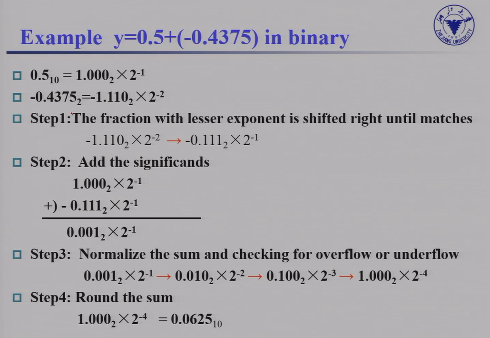

Chap 2: Arithmetic for Computer
约 4062 个字 2 行代码 23 张图片 预计阅读时间 27 分钟
Introduction
Instructions can be divided into 3 categories
- memory-reference instructions
e.g.lw, sw需要 ALU 计算内存地址 - arithmetic-logical instructions
e.g.add, sub, and, or, xor, slt需要 ALU 进行计算 - control flow instructions
e.g.beq, bne, jal需要 ALU 进行条件判断
Signed Number Formats
- Sign-magnitude（原码）
- 开头第一个表示符号 0 正 1 负
- 1's Complement（反码）
- 在原码的基础上，符号位不动，其他位取反 -- 注意，任何正数的原码 = 反码 = 补码，而负数都是通过补码表示的。
- 2's Complement（补码）
- 在反码的基础上，运算 +1 -- 注意，任何正数的原码 = 反码 = 补码，而负数一般情况下都是通过补码表示的
- Biased notation （移码）
- 在补码的基础上，符号位取反
Arithmetic
- Simple ALU

- CLA(Carry Lookahead Adder)
- CSA(Carry Selection Adder)
注 : RISC-V 不支持 nor 指令。
Multiplication
Unsigned multiplication
Product ( 乘积 ) = Multiplicand ( 被乘数 ) \(\times\) Multiplier ( 乘数 )
假定被乘数和乘数都是 64 位的
-
如果乘数末位是 1, 加被乘数，否则加 0. 随后将被乘数左移 1 位。

需要 128+128+64 bit 的寄存器，和一个 128 bit ALU.
-
不移被乘数，而是移积 (product). 这样 ALU 只需要 64 位。
Example

-
在第二种优化的基础上，这里积最开始只保存在左半部分，右半部分为空。而乘数也要右移，这样我们可以把两个数拼到一起，Product 的左半 64 位初始置为 0，右半 64 位初始置为 Mutiplier，同时右移。
Signed multiplication
比较易得的，我们想到有符号相乘可以用非常简单的思想迁移过来，只需将符号位异或，将有符号数统一转换成无符号数，再套用先前的无符号数乘法器即可
但是先前的无符号数乘法器有一点并不能让我们满意，对于 64 位无符号数的乘法器，总是需要迭代 64 次，不管对于多么简单的数，总是要做 64 次加法。对于有符号乘法而言，另一种选择计算方式是 Booth's Algorithm
Booth's Algorithm
思想：把连续的 1 通过“高位 - 低位”的方式（例如 01110 = 1000-10）转换，从而起到减少“1”的作用，即在实现总可以减少加法操作

实现方式
最开始把积放在高位，被乘数放在低位
-
Action
- 10 - subtract multiplicand from left
- 11 - nop
- 01 - add multiplicand to left half
- 00 - nop
每个操作结束后都要移位，和 2.1.1 中类似
注意移位时不要改变符号位
Example

被乘数 Multiplicand 是 0010, 乘数 Multiplier 是 1101.
最开始将积 0000 放在高四位, 1101 作为乘数放在低四位。
最开始 10, 即执行减操作, \(0000-0010=1110\). 答案依然放在高四位，随后右移，以此类推。
注意右移的时候是算术右移, \(bit_{-1}\) 也可能会改变。
Another Example
Faster Multiplication
32 位数乘 32 位数，可以转换为 32 个 32 位数相加

这种并行的思想可以举个例子来说明：1110 * 1010 = 0000 + 11100 + 000000 + 1110000
那这样只需要用类似二分的想法分级做加法，第一级加法器先计算 0000 + 111100；以及 000000 + 1110000；第二级加法器再计算第一级加法器得到的两个中间数。
因此不同于原本的 4 位数乘法器需要做 4 次右移，进行一次乘法也就需要 4 个时钟周期；这种并行的方法只需要 \(log_2^4 = 2\) 个时钟周期，但是需要更多的加法器（也就是完成第一级运算需要的加法器 4/2=2 个加法器
那么对于 64 位乘法器而言，并行后只需要 \(log_2^64=6\) 个时钟周期；但是也需要 64/2=32 个加法器，硬件资源开销比较大，因此实际中不太会采取这种并行的方法。
Division
Dividend ( 被除数 ) \(\div\) Divisor ( 除数 )
以 64 位数 / 64 位数为例
-
将除数放到高位。从高位开始减，减完将除数右移。商也随之不断左移。如果减完之后是负数，需要还回去。

7÷2

-
当然除法也存在优化方案
事实上，乘法器和除法器在结构上没有任何差别，除了多了一个“右移”的信号，原因是最后一次减法可能需要进行右移操作（感觉还是有点奇怪，课上存在一些说法不一的情况，不过貌似除法不太会考）32 位 /32 位的除法器需要 64 位的寄存器
可以将商和被除数统一放置在余数寄存器中，右半部分作为商，左半部分作为余数

Example


带符号的除法：没有类似乘法的 Booth’s Algorithm 一样的方式，可以单独处理符号位，然后要求余数和被除数符号相同即可。
除零会产生溢出，由软件检测，不在硬件考虑范围内。
Floating point number
大部分处理器可能本身并不支持浮点运算，只不过在软件层面可以将浮点运算转换为整数运算。
IEEE 754 floating representation
我们将小数点左边只有 1 位数字的表示数的方法称为 科学记数法 , scientific notation，而如果小数点左边的数字不是 0，我们称这个数的表示是一个 规格化数 , normalized number。科学记数法能用来表示十进制数，当然也能用来表示二进制数。
IEEE(IE Triple) 754 规定了一种浮点数标准：我们将浮点数表示为 \((-1)^S \times F \times 2^E\) 的形式，这里的 \(F \times 2^E\) 是一个规格化数，而 \((-1)^S\) 用来表示符号位：\(S\) 为 0 说明该浮点数为正数，为 1 则为负数；\(F\) 和 \(E\) 也用若干 bits 表示，分别表示尾数和指数，我们稍后讨论。也就是说，我们将其表示为 \(1.\text{xxxxx}_2\times 2^{\text{yyyy}}\) 的形式这意味着我们没法直接通过这种表达形式表示 0（为什么小数点左边是 1 呢？因为二进制只有 0 和 1，而规格化要求小数点左边不能为 0
小数点的英文是 decimal point，但是我们这种表示方法不再是 decimal 的了，因此我们起个新名字：二进制小数点 , binary point。
IEEE 754 规定了两种精度的浮点数格式，分别是 single precision 和 double precision（分别对应 C 语言中的 float 和 double
可以看到，fraction 的位数越多，浮点数的精度就越高；而 exponent 的位数越多，浮点数能保存的范围就越大。
那么对于 \((-1)^S \times F \times 2^E\)，\(S\) 的二进制表示方法是显然的，仅需要一个 bit 就好了。那么 \(F\) 和 \(E\) 怎么表示呢？如我们之前所说，\(F\) 就是 \(1.\text{.xxxxx}_2\) 的形式，这个 1 是固定的，因此 \(F\) 只需要保存 \(\text{.xxxxx}\) 的部分就可以了（但是请注意，它的权重从左到右分别是 \(2^{-1}, 2^{-2}, ...\)exponent 其实是 \(E + bias\) 的二进制。也就是说，对于这样的一个表示，其值是：
课本给出了一个例子：
聪明的小朋友可能会问，0 应该怎么保存呢？毕竟 0 没有前导 1。对于这样的特殊情形，IEEE 754 有特别规定，用特殊的值保存它们：
在上表中：
- 第 1 条表示 0；
- 第 2 条表示非规格化数，这种数主要是为了用来表示一些很小的数，它的取值为 \((-1)^S\cdot (\mathbf{0} + \text{fraction}) \cdot 2 ^ {- \text{bias}}\)；但是并非所有机器都支持这种表示，有的机器会直接抛出一个 exception。我们不考虑非规格数的存在；
- 第 3 条表示正常的浮点数；
- 第 4 条表示无穷大或者无穷小，出现在 exponent overflow 或者浮点数运算中非 0 数除以 0 的情况；
- 第 5 条表示非数，出现在 0/0, inf / inf, inf - inf, inf * 0 的情况
（如果数字过大不能表示，即 overflow，则结果置为 inf；如果数字过小不能表示，即 underflow，则结果置为 0
这两种表示法的范围和精度分别是多少呢？
-
范围
- 能表示值的 绝对值 的范围是 \(1.0_2 \times 2^{1-\text{bias}} \sim 1.11\dots 11_2 \times 2^{11\dots 11_2-1-\text{bias}}\)，即 \(1\times 2^{1 - \text{bias}}\sim(2 - 2^\text{-Fra#})\times 2^{(2^\text{Exp#} - 1) - 1 - \text{bias}}\)，其中
Fra#和Exp#分别表示 fraction 和 exponent 的位数； - 单精度浮点数：\(\pm 1\times 2^{-126}\sim \pm(2 - 2^{-23}) \times 2^{127}\)
- 双精度浮点数：\(\pm 1\times 2^{-1022}\sim \pm(2 - 2^{-52}) \times 2^{1023}\)
- 能表示值的 绝对值 的范围是 \(1.0_2 \times 2^{1-\text{bias}} \sim 1.11\dots 11_2 \times 2^{11\dots 11_2-1-\text{bias}}\)，即 \(1\times 2^{1 - \text{bias}}\sim(2 - 2^\text{-Fra#})\times 2^{(2^\text{Exp#} - 1) - 1 - \text{bias}}\)，其中
-
精度
- \(2^ \text{-Fra#}\)
- 单精度浮点数：\(2^{-23}\)
- 双精度浮点数：\(2^{-52}\)
有时候题目里会出不同的浮点数表示法，让你比较精度，此时一般指的是，fraction + exponent 总位数相同的情况下，fraction 更多的一般更精确，也就是说这个精度更倾向于“能表示更多的小数位”。
18~19 Final

答案
+inf, 0xBF800000
Addition
以 \(1.000_2\times2^{-1}-1.110_2\times2^{-2}\) 为例， 浮点数的加减法分为以下几步：
-
Alignment: 指数对齐，将小指数对齐到大指数：\(-1.110_2\times2^{-2} = -0.111\times2^{-1}\)
为什么是小对大？首先，小对大的过程是在小指数的 fraction 前补
0，可能导致末尾数据丢失；大对小的过程是在大指数的 fraction 后补0，可能导致前面的数据丢失。在计算过程中，我们保持的精确位数是有限的，而在迫不得已丢去精度的过程中，让小的那个数的末几位被丢掉的代价比大的前几位丢失要小太多了； -
Addiction Fraction 部分相加减：\(1.000-0.111=0.001\)
- Normalization: 将结果规格化：\(0.001\times2^{-1}=1.000\times2^{-4}\)；同时需要检查是否出现 overflow 或者 underflow，如果出现则触发 Exception
- Rounding: 将 Fraction 部分舍入到正确位数；舍入结果可能还需要规格化，此时回到步骤 3 继续运行。( 类似于十进制的四舍五入，对于二进制而言，我们采用“0 舍 1 入”法 )
Example

1.6 + 0.3
- 对阶 0.3 的阶码小，所以 0.3 的阶码调整为 01111111，对应尾数调整为：0.01001100110011001100110 10（最后的 10 先保留起来）
- 尾数运算

- 规格化，本例无需规格化
-
舍入处理
1.11100110011001100110011 10舍入处理后为1.11100110011001100110100所以最终尾数为：
11100110011001100110100 -
溢出判断 没有溢出，所以最终结果为：(0 01111111 11100110011001100110100)₂
Multiplication
分别处理符号位、exponent 和 fraction：
- 将两个 Exponent 相加并 减去一个 bias，因为 bias 加了 2 次
- 将两个 (1 + Fraction) 相乘，并将其规格化；此时同样要考虑 overflow 和 underflow；然后舍入，如果还需要规格化则重复执行
- 根据两个操作数的符号决定结果的符号
Example
Accurate Arithmetic
和整数能够精确表示最小数和最大数之间的每个数不同，浮点数无法做到真正精确的表示，通常只能用近似值来表示。而双精度浮点数能精确表示的最多只有 \(2^53\) 个数。我们能做的就是获得和实际数字接近的浮点数表示。因此，IEEE 754 提供了几种舍入的方法，让程序员选择想要的近似值。
Round mode
IEEE754 标准中的 4 种舍入方法
-
就近舍入：即十进制下的“四舍五入”，例如有效数字超出规定数位的多余数字是 1001，它大于超出规定最低位的一半（即 0.5
） ，故最低位进 1。如果多余数字是 0111，它小于最低位的一半，则舍掉多余数字（截断尾数、截尾）即可。对于多余数字是 1000、正好是最低位一半的特殊情况，最低位为 0 则舍掉多余位，最低位为 1 则进位 1、使得最低位仍为 0（偶数） 。Example
注意这里说明的数位都是指二进制数。
举例：要求保留小数点后 3 位。
对于 1.0011001，舍入处理后为 1.010（去掉多余的 4 位，加 0.001）
对于 1.0010111，舍入处理后为 1.001（去掉多余的 4 位）
对于 1.0011000，舍入处理后为 1.010（去掉多余的 4 位，加 0.001，使得最低位为 0）
对于 1.1001001，舍入处理后为 1.101（去掉多余的 4 位，加 0.001）
对于 1.1000111，舍入处理后为 1.100（去掉多余的 4 位）
对于 1.1001000，舍入处理后为 1.100（去掉多余的 4 位，不加，因为最低位已经为 0）
对于 1.01011，舍入处理后为 1.011（去掉多余的 2 位，加 0.001）
对于 1.01001，舍入处理后为 1.010（去掉多余的 2 位）
对于 1.01010，舍入处理后为 1.010（去掉多余的 2 位，不加）
对于 1.01111，舍入处理后为 1.100（去掉多余的 2 位，加 0.001）
对于 1.01101，舍入处理后为 1.011（去掉多余的 2 位）
对于 1.01110，舍入处理后为 1.100（去掉多余的 2 位，加 0.001）
-
朝 0 舍入：即朝数轴零点方向舍入，即直接截尾。
- 朝正无穷舍入：对正数而言，只要多余位不全为 0 则向最低有效位进 1；负数则直接截尾。
- 朝负无穷舍入：对负数而言，向最低有效位进 1；正数若多余位不全部为 0 则简单截尾。
Extra bit
IEEE 754 在中间计算时，总是需要在右边保留两个额外的位，分别成为保护位 (guard) 和舍入位 (round)。
道理其实比较简单，和我们人工手算会做的事情是一样的（我们不会在中间计算过程中直接将中间数舍入到目标精确位数，而是会暂时保留）以下面的精确位数为 2 位的加法为例，如果我们在中间计算中不保留 guard 和 round，最后再做就近舍入计算就会得到不准确的结果
当然往往我们会遇到这样一个难题：例如将 \(5.01_{10} \times 10^{-1}\) 和 \(2.34_{10} \times 10^2\) 相加。即使有保护位和舍入位，我们将 0.0050 加到 2.34, 也会得到和为 2.3450。那么假设我们将其舍入到我们需要的精确位数小数点后 2 位，就会舍入为最接近的偶数 2.34。但是事实上如果保留中间数的所有位，最终应该是 2.34501 舍入为 2.35。
因此我们还需要一个粘滞位 (sticky)，来允许计算机在舍入时能分辨出 0.50..00 和 0.50...01 之间的差异。用于舍入时除了保护位和舍入位之外的位，当右侧有非零位时就设为 1，从而能够实现 "round to nearest even"
ulp
units in the last place(ulp): The number of bits in error in the least significant bits of the significant between the actual number and the number that can be represented.
舍入的最坏情况是实际的数刚好在两个浮点表示之间，浮点的精度通常以有效位数中最低有效位的错误位数来衡量，这种衡量方式称为最后位置单位的数目，即 ulp。
如果一个数通过浮点数的方式表示后的最低有效位比实际小 2，则称少了 2ulp。
在没有上溢出、下溢出或无效操作引发的例外情况下，IEEE 754 标准保证计算机使用的数的误差在半个 ulp 以内